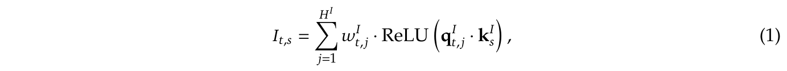
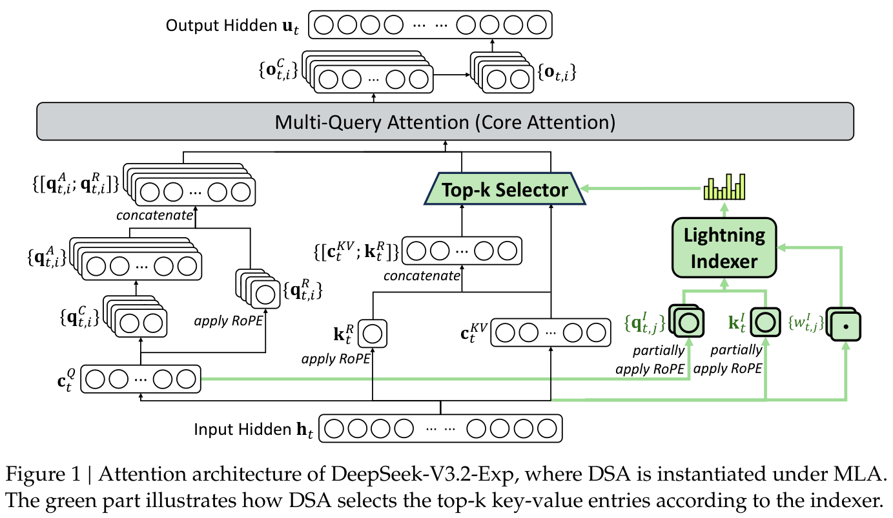
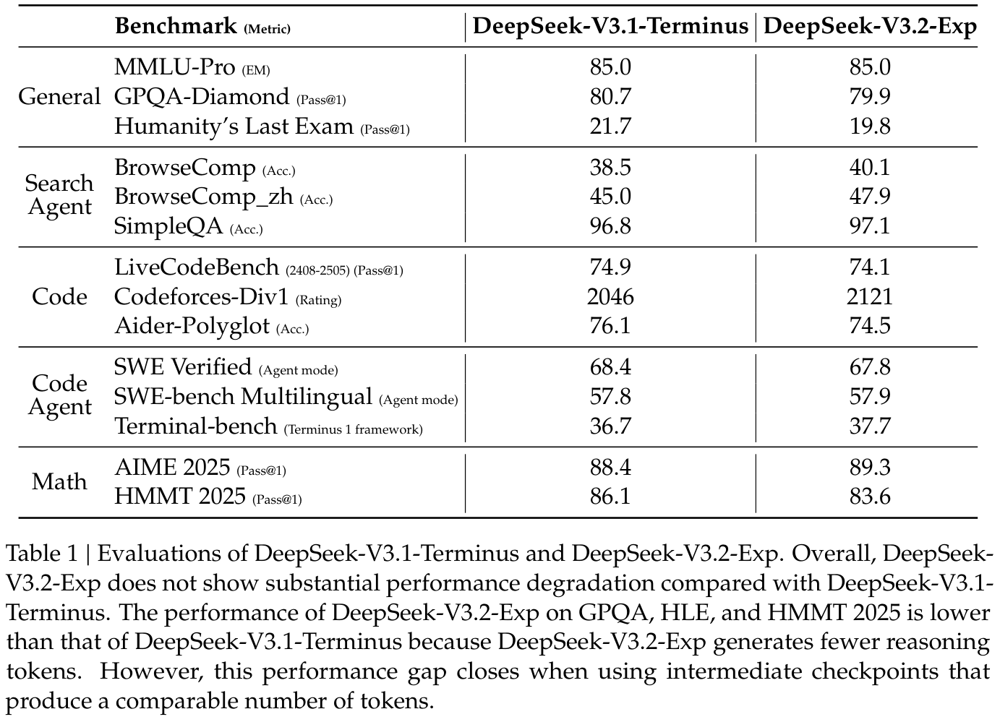
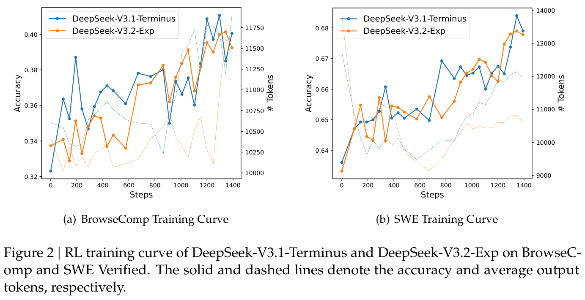
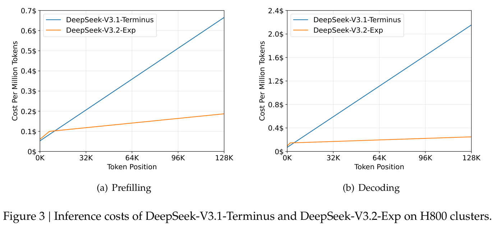
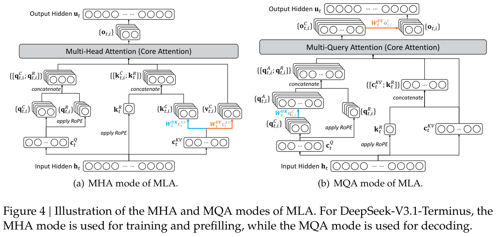

DeepSeek-V3.2-Exp：通过 DeepSeek Sparse Attention 提升长上下文效率
摘要
我们介绍 DeepSeek-V3.2-Exp，这是一款实验性的稀疏 attention 模型，通过继续训练为 DeepSeek-V3.1-Terminus 引入了 DeepSeek Sparse Attention（DSA）。DSA 是一种由 lightning indexer 驱动的细粒度稀疏 attention 机制；借助 DSA，DeepSeek-V3.2-Exp 在训练和推理方面均实现了显著的效率提升，尤其是在长上下文场景中。模型 checkpoint 可在 https://huggingface.co/deepseek-ai/DeepSeek-V3.2-Exp 获取。
1. 架构
与 DeepSeek-V3.1 的最后一个版本 DeepSeek-V3.1-Terminus 相比，DeepSeek-V3.2-Exp 唯一的架构修改是通过继续训练引入 DeepSeek Sparse Attention（DSA）。
DSA 原型。DSA 原型主要由两个组件组成：lightning indexer 和细粒度 token 选择机制。
Lightning indexer 计算查询 token \(\mathbf{h}_t \in \mathbb{R}^{d}\) 与前序 token \(\mathbf{h}_s \in \mathbb{R}^{d}\) 之间的索引分数 \(I_{t,s}\)，以确定查询 token 应选择哪些 token：

其中，\(H^I\) 表示索引器头的数量；\(\mathbf{q}^I_{t,j} \in \mathbb{R}^{d^I}\) 和 \(w^I_{t,j} \in \mathbb{R}\) 由查询 token \(\mathbf{h}_t\) 得到；\(\mathbf{k}^I_s \in \mathbb{R}^{d^I}\) 由前序 token \(\mathbf{h}_s\) 得到。出于吞吐量方面的考虑，我们选择 ReLU 作为激活函数。由于 lightning indexer 的头数较少，而且可以用 FP8 实现，其计算效率十分突出。
给定每个查询 token \(\mathbf{h}_t\) 的索引分数 \(\{I_{t,s}\}\)，我们的细粒度 token 选择机制仅检索与 top-k 索引分数对应的键值条目 \(\{\mathbf{c}_s\}\)。随后，在查询 token \(\mathbf{h}_t\) 与稀疏选中的键值条目 \(\{\mathbf{c}_s\}\) 之间应用 attention 机制，计算 attention 输出 \(\mathbf{u}_t\)：

基于 MLA 实现 DSA。考虑到需要从 DeepSeek-V3.1-Terminus 继续训练，我们为 DeepSeek-V3.2-Exp 基于 MLA（DeepSeek-AI, 2024）实现 DSA。在内核层面，为了提高计算效率，每个键值条目都必须由多个查询共享（Yuan et al., 2025）。因此，我们基于 MLA 的 MQA（Shazeer, 2019）模式1实现 DSA，其中每个潜在向量（即 MLA 的键值条目）都由查询 token 的所有查询头共享。基于 MLA 的 DSA 架构如图 1 所示。我们还提供了 DeepSeek-V3.2-Exp 的开源实现2，以明确、无歧义地说明具体细节。
2. 训练
我们以一个上下文长度已扩展至 128K 的 DeepSeek-V3.1-Terminus 基础 checkpoint 为起点，先进行继续预训练，再进行后训练，得到 DeepSeek-V3.2-Exp。
2.1. 继续预训练
DeepSeek-V3.2-Exp 的继续预训练包含两个训练阶段。在这两个阶段，训练数据的分布都与 DeepSeek-V3.1-Terminus 所用的 128K 长上下文扩展数据完全一致。
稠密 warmup 阶段。我们首先通过一个短暂的 warmup 阶段初始化 lightning indexer。在这一阶段，我们保留稠密 attention，并冻结除 lightning indexer 之外的所有模型参数。为使索引器输出与主 attention 分布对齐，对于第 \(t\) 个查询 token，我们首先对所有 attention 头的主 attention 分数求和，得到聚合分数。
1 我们在附录 A 中说明 MLA 的 MQA 与 MHA 模式之间的区别。
2 https://huggingface.co/deepseek-ai/DeepSeek-V3.2-Exp/tree/main/inference
随后，沿序列维度对这一求和结果进行 L1 归一化，得到目标分布 \(p_{t,:} \in \mathbb{R}^{t}\)。基于 \(p_{t,:}\)，我们将 KL 散度损失设为索引器的训练目标：
在 warmup 阶段，我们使用 \(10^{-3}\) 的学习率。索引器仅训练 1000 步，每步包含 16 条长度为 128K token 的序列，总计 2.1B token。
稀疏训练阶段。索引器 warmup 结束后，我们引入细粒度 token 选择机制，并优化所有模型参数，使模型适应 DSA 的稀疏模式。在这一阶段，我们仍使索引器输出与主 attention 分布对齐，但只考虑所选 token 集合 \(S_t = \{s \mid I_{t,s} \in \operatorname{Top-k}(I_{t,:})\}\)：
需要说明的是，我们将索引器输入从计算图中分离，以便独立优化。索引器的训练信号仅来自 \(\mathcal{L}^I\)，而主模型仅依据语言建模损失进行优化。在这一稀疏训练阶段，我们采用 \(7.3 \times 10^{-6}\) 的学习率，并为每个查询 token 选择 2048 个键值 token。主模型与索引器共同训练 15000 步，每步包含 480 条长度为 128K token 的序列，总计 943.7B token。
2.2. 后训练
继续预训练结束后，我们进行后训练，得到最终的 DeepSeek-V3.2-Exp。DeepSeek-V3.2-Exp 的后训练也采用稀疏 attention，其方式与稀疏继续预训练阶段相同。为了严谨评估引入 DSA 的影响，DeepSeek-V3.2-Exp 沿用 DeepSeek-V3.1-Terminus 的后训练流水线、算法和数据，具体如下。
专用模型蒸馏。对于每项任务，我们首先开发一个仅专注于该领域的专用模型，所有专用模型均从同一个预训练的 DeepSeek-V3.2 基础 checkpoint 进行微调。除写作任务和通用问答外，我们的框架还涵盖五个专门领域：数学、竞赛编程、通用逻辑推理、agent 编程和 agent 搜索。每个专用模型都使用大规模强化学习（RL）计算进行训练。此外，我们使用不同模型生成长 chain-of-thought 推理（思考模式）和直接回答生成（非思考模式）的训练数据。专用模型准备就绪后，它们用于为最终 checkpoint 生成各领域的数据。实验结果表明，在蒸馏数据上训练的模型，其表现仅略低于领域专用模型；通过后续 RL 训练，这一性能差距可以有效消除。
混合 RL 训练。对于 DeepSeek-V3.2-Exp，我们仍采用组相对策略优化（Group Relative Policy Optimization，GRPO）（DeepSeek-AI, 2025; Shao et al., 2024）作为 RL 训练算法。此前的 DeepSeek 模型使用多阶段强化学习，而我们将推理、agent 和人类对齐训练合并到一个 RL 阶段。这种方法有效平衡了不同领域的表现，同时避开了多阶段训练范式常见的灾难性遗忘问题。对于推理和（接下页）

（接上页）agent 任务，我们采用基于规则的结果奖励、长度惩罚和语言一致性奖励。对于通用任务，我们使用生成式奖励模型，每个提示都有自己的评估细则。我们的奖励设计仔细平衡了两组关键权衡：（1）长度与准确率；（2）语言一致性与准确率。
3. 评估
模型能力。我们在一组侧重不同能力的基准上评估 DeepSeek-V3.2-Exp，并在表 1 中将其与 DeepSeek-V3.1-Terminus 比较。虽然 DeepSeek-V3.2-Exp 显著提高了长序列的计算效率，但在短上下文和长上下文任务中，我们都没有观察到它相对于 DeepSeek-V3.1-Terminus 出现明显的性能退化。此外，我们还比较了 DeepSeek-V3.2-Exp 与 DeepSeek-V3.1-Terminus 的强化学习训练曲线，如图 2 所示。两个模型在 BrowseComp 和 SWE Verified 上的表现都在整个训练过程中稳步提升，曲线高度接近，这体现了 DSA 的训练稳定性。
推理成本。DSA 将主模型的核心 attention 复杂度从 \(O(L^2)\) 降低至 \(O(Lk)\)，其中 \(k\,(\ll L)\) 为所选 token 的数量。虽然 lightning indexer 的复杂度仍为 \(O(L^2)\)，但其计算量远小于 DeepSeek-V3.1-Terminus 中的 MLA。结合我们的优化实现，DSA 在长上下文场景中实现了显著的端到端加速。图 3 展示了 DeepSeek-V3.1-Terminus 与 DeepSeek-V3.2-Exp 的 token 成本如何随序列中的 token 位置变化。这些成本通过对部署在 H800 GPU 上的实际服务进行基准测试来估计，（接下页）


（接上页）按每 GPU 每小时 2 美元的租赁价格计算。请注意，对于短序列 prefill，我们专门实现了带掩码的 MHA 模式来模拟 DSA，以在短上下文条件下获得更高效率。
未来的真实世界验证。尽管我们的内部评估表明 DeepSeek-V3.2-Exp 取得了令人鼓舞的结果，我们仍在积极推动真实世界场景中进一步的大规模测试，以发现稀疏 attention 架构可能存在的局限。
参考文献
DeepSeek-AI. DeepSeek-V2：强大、经济且高效的 MoE 语言模型。CoRR, abs/2405.04434, 2024. doi: 10.48550/ARXIV.2405.04434. URL https://doi.org/10.48550/arXiv.2405.04434.
DeepSeek-AI. DeepSeek-R1：通过强化学习激发 LLM 的推理能力。Nature, 645(8081):633–638, 2025.
Z. Shao, P. Wang, Q. Zhu, R. Xu, J. Song, M. Zhang, Y. K. Li, Y. Wu, and D. Guo. DeepSeekMath：突破开放语言模型数学推理的极限。CoRR, abs/2402.03300, 2024. doi: 10.48550/ARXIV.2402.03300. URL https://doi.org/10.48550/arXiv.2402.03300.
N. Shazeer. 快速 transformer decoding：只需一个写入头。CoRR, abs/1911.02150, 2019. URL http://arxiv.org/abs/1911.02150.
J. Yuan, H. Gao, D. Dai, J. Luo, L. Zhao, Z. Zhang, Z. Xie, Y. Wei, L. Wang, Z. Xiao, Y. Wang, C. Ruan, M. Zhang, W. Liang, and W. Zeng. 原生稀疏 attention：与硬件匹配、可原生训练的稀疏 attention。载于 W. Che, J. Nabende, E. Shutova, and M. T. Pilehvar（编），第 63 届计算语言学协会年会论文集（第 1 卷：长篇论文），ACL 2025，第 23078–23097 页。Association for Computational Linguistics, 2025. URL https://aclanthology.org/2025.acl-long.1126/.
附录
A. MLA 的 MHA 与 MQA 模式

图 4 展示了 MLA 的两个方面——MHA 与 MQA 模式，以及二者之间的变换。